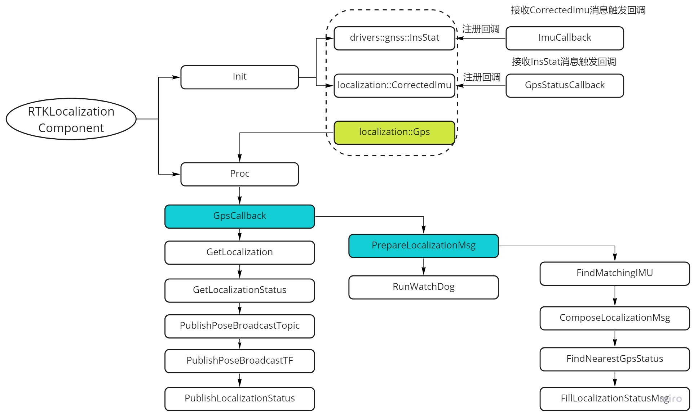

Dig into Apollo - Localization  ¶
¶
虽千万人，吾往矣。
Localization模块简介¶
localization模块主要实现了以下2个功能：
输出车辆的位置信息（planning模块使用）
输出车辆的姿态，速度信息（control模块使用）
其中apollo代码中分别实现了3种定位方法：
GNSS + IMU定位
NDT定位（点云定位）
MSF（融合定位）
MSF方法参考论文”Robust and Precise Vehicle Localization Based on Multi-Sensor Fusion in Diverse City Scenes”
代码目录¶
下面是localization的目录结构，在查看具体的代码之前最好看下定位模块的readme文件:
├── common // 声明配置(flags)，从conf目录中读取相应的值
├── conf // 配置文件存放目录
├── dag // cyber DAG流
├── launch // cyber的配置文件，依赖DAG图（这2个和cyber有关的后面再分析）
├── msf // 融合定位（gnss,点云,IMU融合定位）
│ ├── common
│ │ ├── io
│ │ ├── test_data
│ │ └── util
│ ├── local_integ
│ ├── local_map
│ │ ├── base_map
│ │ ├── lossless_map
│ │ ├── lossy_map
│ │ ├── ndt_map
│ │ └── test_data
│ ├── local_tool
│ │ ├── data_extraction
│ │ ├── local_visualization
│ │ └── map_creation
│ └── params
│ ├── gnss_params
│ ├── vehicle_params
│ └── velodyne_params
├── ndt // ndt定位
│ ├── map_creation
│ ├── ndt_locator
│ └── test_data
│ ├── ndt_map
│ └── pcds
├── proto // 消息格式
├── rtk // rtk定位
└── testdata // imu和gps的测试数据
通过上述目录可以知道，定位模块主要实现了rtk，ndt，msf这3个定位方法，分别对应不同的目录。proto文件夹定义了消息的格式，common和conf主要是存放一些配置和消息TOPIC。下面我们逐个分析RTK定位、NDT定位和MSF定位。
RTK定位流程¶
RTK定位是通过GPS和IMU的信息做融合然后输出车辆所在的位置。RTK通过基准站的获取当前GPS信号的误差，用来校正无人车当前的位置，可以得到厘米级别的精度。IMU的输出频率高，可以在GPS没有刷新的情况下（通常是1s刷新一次）用IMU获取车辆的位置。下面是RTK模块的目录结构。
├── BUILD // bazel编译文件
├── rtk_localization.cc // rtk定位功能实现模块
├── rtk_localization_component.cc // rtk消息发布模块
├── rtk_localization_component.h
├── rtk_localization.h
└── rtk_localization_test.cc // 测试
其中”rtk_localization_component.cc”注册为标准的cyber模块，RTK定位模块在”Init”中初始化，每当接收到”localization::Gps”消息就触发执行”Proc”函数。
class RTKLocalizationComponent final
: public cyber::Component<localization::Gps> {
public:
RTKLocalizationComponent();
~RTKLocalizationComponent() = default;
bool Init() override;
bool Proc(const std::shared_ptr<localization::Gps> &gps_msg) override;
下面我们分别查看这2个函数。
Init函数
Init函数实现比较简单，一是初始化配置信息，二是初始化IO。初始化配置信息主要是读取一些配置，例如一些topic信息等。下面主要看下初始化IO。
bool RTKLocalizationComponent::InitIO() {
// 1.读取IMU信息，每次接收到localization::CorrectedImu消息，则回调执行“RTKLocalization::ImuCallback”
corrected_imu_listener_ = node_->CreateReader<localization::CorrectedImu>(
imu_topic_, std::bind(&RTKLocalization::ImuCallback, localization_.get(),
std::placeholders::_1));
CHECK(corrected_imu_listener_);
// 2.读取GPS状态信息，每次接收到GPS状态消息，则回调执行"RTKLocalization::GpsStatusCallback"
gps_status_listener_ = node_->CreateReader<drivers::gnss::InsStat>(
gps_status_topic_, std::bind(&RTKLocalization::GpsStatusCallback,
localization_.get(), std::placeholders::_1));
CHECK(gps_status_listener_);
// 3.发布位置信息和位置状态信息
localization_talker_ =
node_->CreateWriter<LocalizationEstimate>(localization_topic_);
CHECK(localization_talker_);
localization_status_talker_ =
node_->CreateWriter<LocalizationStatus>(localization_status_topic_);
CHECK(localization_status_talker_);
return true;
}
也就是说，RTK模块同时还接收IMU和GPS的状态信息，然后触发对应的回调函数。具体的实现在”RTKLocalization”类中，我们先看下回调的具体实现。以”GpsStatusCallback”为例，每次读取到gps状态信息之后，会把信息保存到”gps_status_list_”列表中。”ImuCallback”类似，也是接收到IMU消息后，保存到”imu_list_”列表中。
void RTKLocalization::GpsStatusCallback(
const std::shared_ptr<drivers::gnss::InsStat> &status_msg) {
std::unique_lock<std::mutex> lock(gps_status_list_mutex_);
if (gps_status_list_.size() < gps_status_list_max_size_) {
gps_status_list_.push_back(*status_msg);
} else {
gps_status_list_.pop_front();
gps_status_list_.push_back(*status_msg);
}
}
Proc
在每次接收到”localization::Gps”消息后，触发执行”Proc”函数。这里注意如果需要接收多个消息，这里是3个消息，则选择最慢的消息作为触发，否则，如果选择比较快的消息作为触发，这样会导致作为触发的消息刷新了，而其它的消息还没有刷新。所以这里采用的是GPS消息作为触发消息，IMU的消息刷新快。下面我们看具体的实现。
bool RTKLocalizationComponent::Proc(
const std::shared_ptr<localization::Gps>& gps_msg) {
// 1. 通过RTKLocalization处理GPS消息回调
localization_->GpsCallback(gps_msg);
if (localization_->IsServiceStarted()) {
LocalizationEstimate localization;
// 2. 获取定位消息
localization_->GetLocalization(&localization);
LocalizationStatus localization_status;
// 3. 获取定位状态
localization_->GetLocalizationStatus(&localization_status);
// publish localization messages
// 4. 发布位置信息
PublishPoseBroadcastTopic(localization);
// 5. 发布位置转换信息
PublishPoseBroadcastTF(localization);
// 6. 发布位置状态信息
PublishLocalizationStatus(localization_status);
ADEBUG << "[OnTimer]: Localization message publish success!";
}
return true;
}
具体的执行过程如下图所示。

主要的执行过程在”GpsCallback”中，然后通过”GetLocalization”和”GetLocalizationStatus”获取结果，最后发布对应的位置信息、位置转换信息和位置状态信息。
由于”GpsCallback”主要执行过程在”PrepareLocalizationMsg”中，因此我们主要分析”PrepareLocalizationMsg”的实现。
获取定位信息¶
PrepareLocalizationMsg函数的具体实现如下。
void RTKLocalization::PrepareLocalizationMsg(
const localization::Gps &gps_msg, LocalizationEstimate *localization,
LocalizationStatus *localization_status) {
// find the matching gps and imu message
double gps_time_stamp = gps_msg.header().timestamp_sec();
CorrectedImu imu_msg;
// 1.寻找最匹配的IMU信息
FindMatchingIMU(gps_time_stamp, &imu_msg);
// 2.根据GPS和IMU信息，给位置信息赋值
ComposeLocalizationMsg(gps_msg, imu_msg, localization);
drivers::gnss::InsStat gps_status;
// 3.查找最近的GPS状态信息
FindNearestGpsStatus(gps_time_stamp, &gps_status);
// 4.根据GPS状态信息，给位置状态信息赋值
FillLocalizationStatusMsg(gps_status, localization_status);
}
下面我们逐个分析上述4个过程。
FindMatchingIMU¶
在队列中找到最匹配的IMU消息，其中区分了队列的第一个，最后一个，以及如果在中间位置则进行插值。插值的时候根据距离最近的原则进行反比例插值。
bool RTKLocalization::FindMatchingIMU(const double gps_timestamp_sec,
CorrectedImu *imu_msg) {
// 加锁，这里有疑问，为什么换个变量就没有锁了呢？
std::unique_lock<std::mutex> lock(imu_list_mutex_);
auto imu_list = imu_list_;
lock.unlock();
// 在IMU队列中找到最新的IMU消息
// scan imu buffer, find first imu message that is newer than the given
// timestamp
auto imu_it = imu_list.begin();
for (; imu_it != imu_list.end(); ++imu_it) {
if ((*imu_it).header().timestamp_sec() - gps_timestamp_sec >
std::numeric_limits<double>::min()) {
break;
}
}
if (imu_it != imu_list.end()) { // found one
if (imu_it == imu_list.begin()) {
AERROR << "IMU queue too short or request too old. "
<< "Oldest timestamp[" << imu_list.front().header().timestamp_sec()
<< "], Newest timestamp["
<< imu_list.back().header().timestamp_sec() << "], GPS timestamp["
<< gps_timestamp_sec << "]";
*imu_msg = imu_list.front(); // the oldest imu
} else {
// here is the normal case
auto imu_it_1 = imu_it;
imu_it_1--;
if (!(*imu_it).has_header() || !(*imu_it_1).has_header()) {
AERROR << "imu1 and imu_it_1 must both have header.";
return false;
}
// 根据最新的IMU消息和它之前的消息做插值。
if (!InterpolateIMU(*imu_it_1, *imu_it, gps_timestamp_sec, imu_msg)) {
AERROR << "failed to interpolate IMU";
return false;
}
}
} else {
// 如果没有找到，则取最新的20ms以内的消息，如果超过20ms则报错。
// give the newest imu, without extrapolation
*imu_msg = imu_list.back();
if (imu_msg == nullptr) {
AERROR << "Fail to get latest observed imu_msg.";
return false;
}
if (!imu_msg->has_header()) {
AERROR << "imu_msg must have header.";
return false;
}
if (std::fabs(imu_msg->header().timestamp_sec() - gps_timestamp_sec) >
gps_imu_time_diff_threshold_) {
// 20ms threshold to report error
AERROR << "Cannot find Matching IMU. IMU messages too old. "
<< "Newest timestamp[" << imu_list.back().header().timestamp_sec()
<< "], GPS timestamp[" << gps_timestamp_sec << "]";
}
}
return true;
}
接下来我们看线性插值
InterpolateIMU
根据上述函数得到2个IMU消息分别对角速度、线性加速度、欧拉角进行插值。原则是根据比例，反比例进行插值。
bool RTKLocalization::InterpolateIMU(const CorrectedImu &imu1,
const CorrectedImu &imu2,
const double timestamp_sec,
CorrectedImu *imu_msg) {
if (timestamp_sec - imu1.header().timestamp_sec() <
std::numeric_limits<double>::min()) {
AERROR << "[InterpolateIMU1]: the given time stamp[" << timestamp_sec
<< "] is older than the 1st message["
<< imu1.header().timestamp_sec() << "]";
*imu_msg = imu1;
} else if (timestamp_sec - imu2.header().timestamp_sec() >
std::numeric_limits<double>::min()) {
AERROR << "[InterpolateIMU2]: the given time stamp[" << timestamp_sec
<< "] is newer than the 2nd message["
<< imu2.header().timestamp_sec() << "]";
*imu_msg = imu1;
} else {
// 线性插值
*imu_msg = imu1;
imu_msg->mutable_header()->set_timestamp_sec(timestamp_sec);
double time_diff =
imu2.header().timestamp_sec() - imu1.header().timestamp_sec();
if (fabs(time_diff) >= 0.001) {
double frac1 =
(timestamp_sec - imu1.header().timestamp_sec()) / time_diff;
// 1. 分别对角速度、线性加速度、欧拉角进行插值
if (imu1.imu().has_angular_velocity() &&
imu2.imu().has_angular_velocity()) {
auto val = InterpolateXYZ(imu1.imu().angular_velocity(),
imu2.imu().angular_velocity(), frac1);
imu_msg->mutable_imu()->mutable_angular_velocity()->CopyFrom(val);
}
...
}
}
return true;
}
InterpolateXYZ
根据距离插值，反比例，即frac1越小，则越靠近p1，frac1越大，则越靠近p2
template <class T>
T RTKLocalization::InterpolateXYZ(const T &p1, const T &p2,
const double frac1) {
T p;
double frac2 = 1.0 - frac1;
if (p1.has_x() && !std::isnan(p1.x()) && p2.has_x() && !std::isnan(p2.x())) {
p.set_x(p1.x() * frac2 + p2.x() * frac1);
}
if (p1.has_y() && !std::isnan(p1.y()) && p2.has_y() && !std::isnan(p2.y())) {
p.set_y(p1.y() * frac2 + p2.y() * frac1);
}
if (p1.has_z() && !std::isnan(p1.z()) && p2.has_z() && !std::isnan(p2.z())) {
p.set_z(p1.z() * frac2 + p2.z() * frac1);
}
return p;
}
ComposeLocalizationMsg¶
填充位置信息，这里实际上涉及到姿态解算，具体是根据GPS和IMU消息对位置信息进行赋值。需要注意需要根据航向对IMU的信息进行转换。
void RTKLocalization::ComposeLocalizationMsg(
const localization::Gps &gps_msg, const localization::CorrectedImu &imu_msg,
LocalizationEstimate *localization) {
localization->Clear();
FillLocalizationMsgHeader(localization);
localization->set_measurement_time(gps_msg.header().timestamp_sec());
// combine gps and imu
auto mutable_pose = localization->mutable_pose();
// GPS消息包含位置信息
if (gps_msg.has_localization()) {
const auto &pose = gps_msg.localization();
// 1. 获取位置
if (pose.has_position()) {
// position
// world frame -> map frame
mutable_pose->mutable_position()->set_x(pose.position().x() -
map_offset_[0]);
mutable_pose->mutable_position()->set_y(pose.position().y() -
map_offset_[1]);
mutable_pose->mutable_position()->set_z(pose.position().z() -
map_offset_[2]);
}
// 2. 获取方向
// orientation
if (pose.has_orientation()) {
mutable_pose->mutable_orientation()->CopyFrom(pose.orientation());
double heading = common::math::QuaternionToHeading(
pose.orientation().qw(), pose.orientation().qx(),
pose.orientation().qy(), pose.orientation().qz());
mutable_pose->set_heading(heading);
}
// linear velocity
// 3. 获取速度
if (pose.has_linear_velocity()) {
mutable_pose->mutable_linear_velocity()->CopyFrom(pose.linear_velocity());
}
}
if (imu_msg.has_imu()) {
const auto &imu = imu_msg.imu();
// linear acceleration
// 4. 获取imu的线性加速度
if (imu.has_linear_acceleration()) {
if (localization->pose().has_orientation()) {
// linear_acceleration:
// convert from vehicle reference to map reference
// 为什么需要做旋转？？？转换为车当前方向的速度？？？
Vector3d orig(imu.linear_acceleration().x(),
imu.linear_acceleration().y(),
imu.linear_acceleration().z());
Vector3d vec = common::math::QuaternionRotate(
localization->pose().orientation(), orig);
mutable_pose->mutable_linear_acceleration()->set_x(vec[0]);
mutable_pose->mutable_linear_acceleration()->set_y(vec[1]);
mutable_pose->mutable_linear_acceleration()->set_z(vec[2]);
// linear_acceleration_vfr
// 设置线性加速度
mutable_pose->mutable_linear_acceleration_vrf()->CopyFrom(
imu.linear_acceleration());
} else {
AERROR << "[PrepareLocalizationMsg]: "
<< "fail to convert linear_acceleration";
}
}
// 5. 设置角速度，也需要根据航向转换
// angular velocity
...
// 6. 设置欧拉角
// euler angle
if (imu.has_euler_angles()) {
mutable_pose->mutable_euler_angles()->CopyFrom(imu.euler_angles());
}
}
}
FindNearestGpsStatus¶
获取最近的Gps状态信息，这里实现的算法是遍历查找离”gps_time_stamp”最近的状态，GPS状态信息不是按照时间顺序排列的？？？
bool RTKLocalization::FindNearestGpsStatus(const double gps_timestamp_sec,
drivers::gnss::InsStat *status) {
...
// 1. 遍历查找最近的GPS状态信息
double timestamp_diff_sec = 1e8;
auto nearest_itr = gps_status_list.end();
for (auto itr = gps_status_list.begin(); itr != gps_status_list.end();
++itr) {
double diff = std::abs(itr->header().timestamp_sec() - gps_timestamp_sec);
if (diff < timestamp_diff_sec) {
timestamp_diff_sec = diff;
nearest_itr = itr;
}
}
...
}
FillLocalizationStatusMsg¶
获取位置状态，一共有3种状态：稳定状态(INS_RTKFIXED)、浮动状态(INS_RTKFLOAT)、错误状态(ERROR)。由于代码比较简单，这里就不分析了。
发布消息¶
最后通过以下几个函数发布消息。
PublishPoseBroadcastTopic // 发布位置信息
PublishPoseBroadcastTF // 发布位置转换transform信息
PublishLocalizationStatus // 发布位置状态信息
以上就是整个RTK的定位流程，主要的思路是通过接收GPS和IMU信息结合输出无人车的位置信息，这里还有一个疑问是为什么最后输出的定位信息的位置是直接采用的GPS的位置信息，没有通过IMU信息对位置信息做解算，还是说在其它模块中实现的？？？